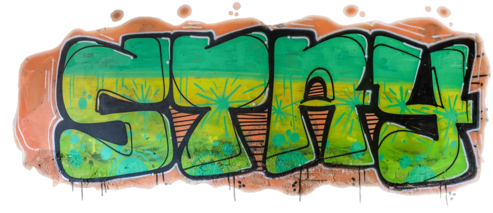
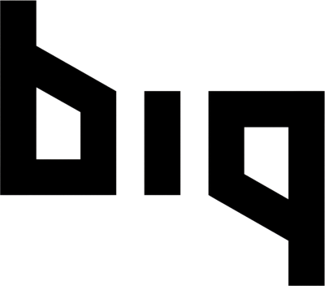
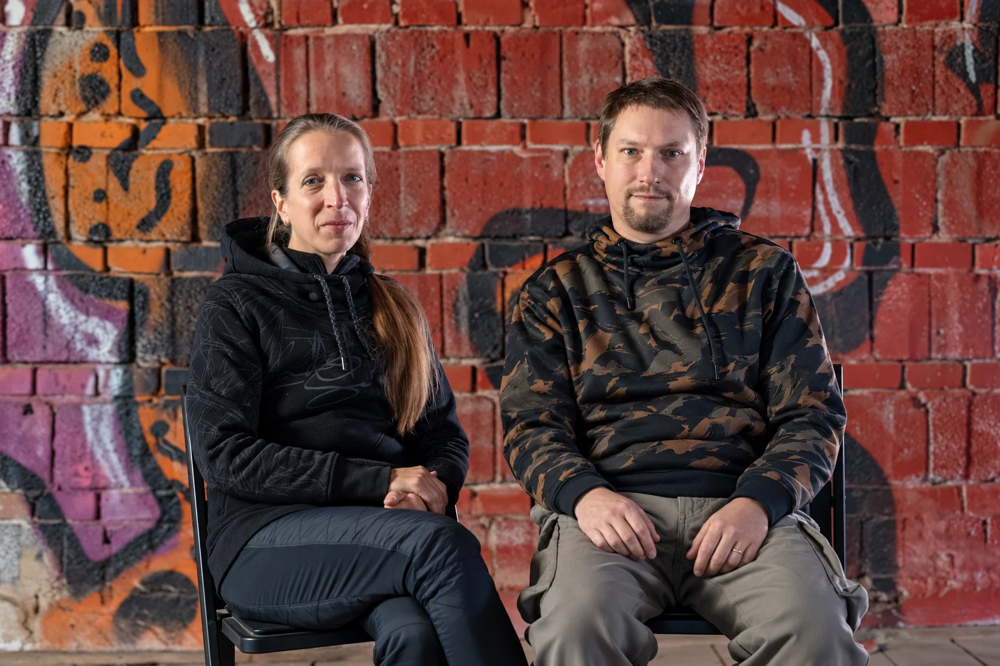

YEZEDO
YEZEDO
Jméno navazuje na JZD. Písmeno Y odkazuje na urbanistickou strukturu obce i areálu.

VENKOVSKÝ INDUSTRIÁL.
NOVÁ ENERGIE.
Vize / Nová adresa pro podnikání
Lehká výroba. Technologie.
Podnikání s prostorem pro růst.
Z bývalého zemědělského družstva v Kosticích tvoříme venkovský industriál pro 21. století. Na dobré adrese u dálnice D2, s vlastní identitou a společným zázemím.
Hodnota pro Kostice
Nové příležitosti pro místní podnikání a práci. Oživený brownfield, zachovaná sýpka a veřejný prostor propojený s obcí. Rozvoj, který vytváří hodnotu pro firmy i každodenní život Kostic.

Příběh místa
Obec Kostice začala postupně získávat pozemky a investovat do území bývalého zemědělského družstva. Z místní iniciativy vyrostla vize inovativní smartzóny. Obec od roku 2024 realizuje přípravu území a technickou infrastrukturu s podporou programu MPO Smart Parks for the Future. V roce 2026 byly dokončeny a zkolaudovány páteřní areálové komunikace a infrastruktura – kanalizace, vodovod, osvětlení a rozvody NN.
Práce a výroba formují nový areál v tradiční zemědělské krajině.
Vzniká dnešní dominanta území.
Proměny vlastnictví a využití areálu.
Začíná postupné získávání pozemků.
Realizace technické infrastruktury s podporou dotace MPO.
Návrh konverze sýpky na Living Lab BIQ a návrh rozvoje Smartzóny YEZEDO.
Předpokládané vydání stavebního povolení pro sýpku a prvních 6 hal do konce roku.
Plánovaný začátek výstavby první etapy (sýpka, haly SO03–SO09).
Identita, která vyrůstá z místa
Jméno navazuje na JZD. Písmeno Y odkazuje na urbanistickou strukturu obce i areálu.

Původní graffiti se stává symbolem zachování autentického charakteru místa.

Bílá ikona Kostic. Sýpka jako místo pro tvoření, spolupráci a sdílení znalostí.
Lidé za projektem

Transformace rozsáhlých brownfieldů bývá doménou velkých developerských skupin – pro běžnou samosprávu je úkolem zdánlivě nemožným. V Kosticích toto nepsané pravidlo přestává platit. Obec pod vedením starosty Mgr. Libora Balgy vzala budoucnost bývalého zemědělského areálu do vlastních rukou a systematicky překonává administrativní i technické limity. Strategická rozhodnutí zde vznikají u kulatých stolů v úzké součinnosti s interdisciplinárním týmem projektových manažerů a profesních specialistů. Kostice tak v praxi otevírají novou cestu pro ostatní obce a ukazují, že i menší obec může být sebevědomým iniciátorem udržitelného rozvoje.
Atelier Dohnalovi v projektu zastává roli garanta architektonické a ideové koncepce. Multižánrový přesah studia umožňuje uchopit záměr v celé jeho šíři – od urbanistického řešení areálu a architektonického návrhu sýpky BIQ a nových hal, přes krajinářskou architekturu a vizuální identitu, až po umělecké intervence, osvětové aktivity a audiovizuální komunikaci. Propojení odvážné vize samosprávy s komplexním autorským přístupem dává zóně YEZEDO jednotný rukopis, v němž se technická racionalita přirozeně potkává s pamětí místa.


Starosta Kostic a Atelier Dohnalovi o tom, co pro ně Yezedo znamená.